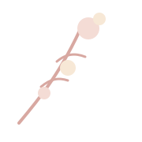
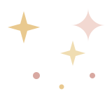
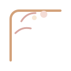

Little Notes
想对妈咪说的话
你一直都不是那种把辛苦挂在嘴边的人，可我知道你这些年有多不容易。很多疲惫、 很多操心、很多需要硬撑的时候，你都一个人安安静静地扛过去了。
我想让你知道，你不是只能一直照顾别人的那个人。你也值得被照顾，被心疼，被温柔地放在最中间。


Mother's Day Letter Book
想把感谢、心疼、陪伴和祝福都折进这只信封里。 也想把你说过想学的塔罗，变成一份慢慢翻看的小礼物。

To Mommy
Little Notes
你一直都不是那种把辛苦挂在嘴边的人，可我知道你这些年有多不容易。很多疲惫、 很多操心、很多需要硬撑的时候，你都一个人安安静静地扛过去了。
我想让你知道，你不是只能一直照顾别人的那个人。你也值得被照顾，被心疼，被温柔地放在最中间。
Gentle Wish
这段时间最重要的，不是把一切都撑住，而是让自己一点一点恢复。能睡得安稳一点， 有精神一点，心里轻松一点，都是很珍贵的好消息。
你不用急着变成“完全没事”的样子。就按自己的节奏慢慢来。今天比昨天舒服一点， 明天比今天安心一点，这样就已经很好了。
Tarot Gift
我把 78 张牌整理成一份适合手机慢慢看的入门图鉴。可以先从大阿卡纳开始，再慢慢翻到四个牌组。